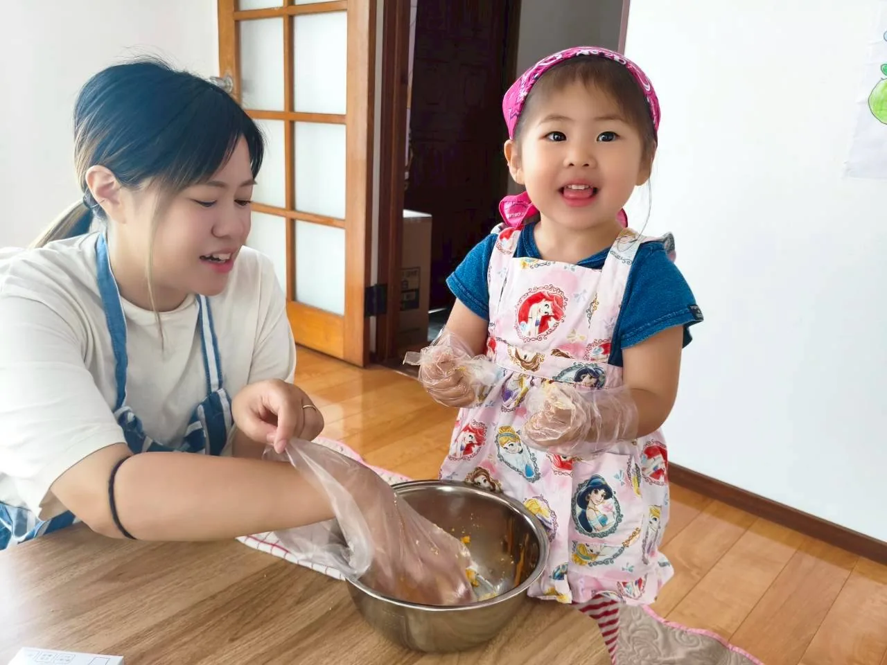
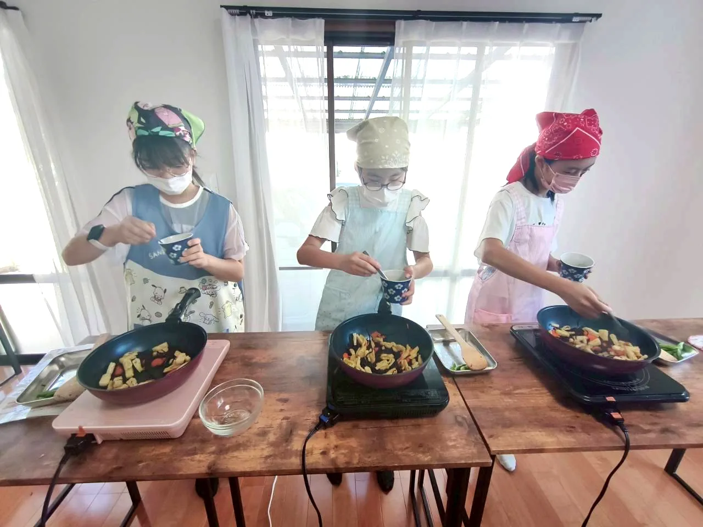
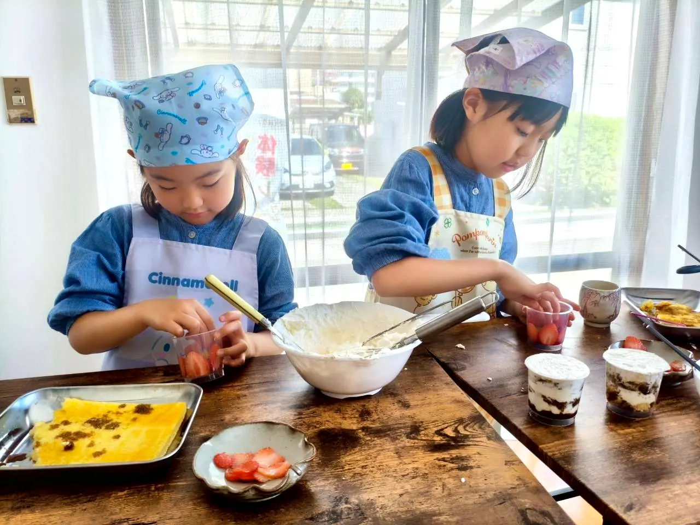
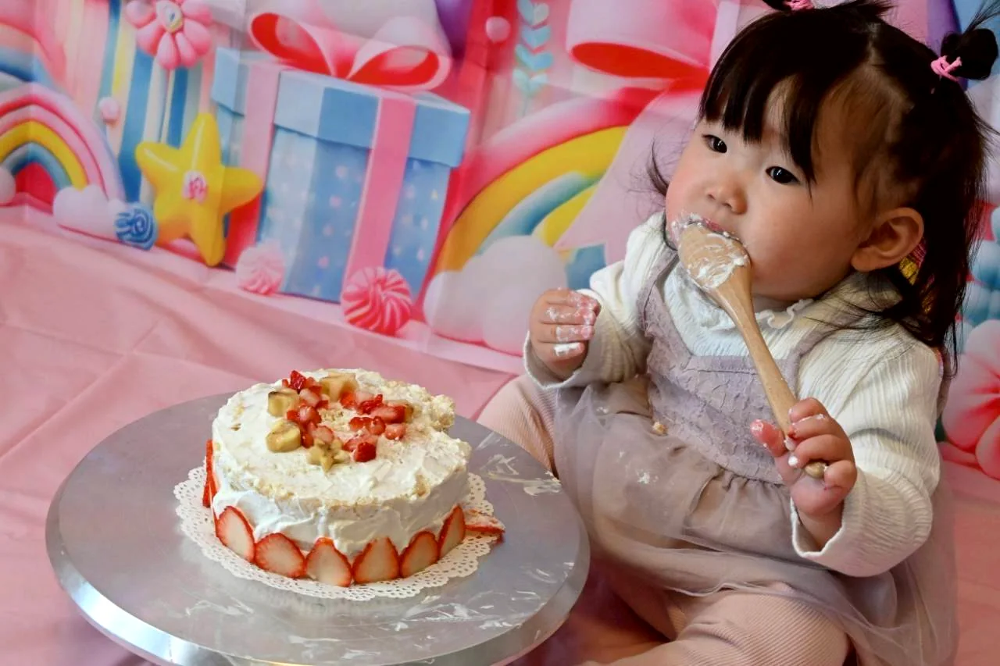
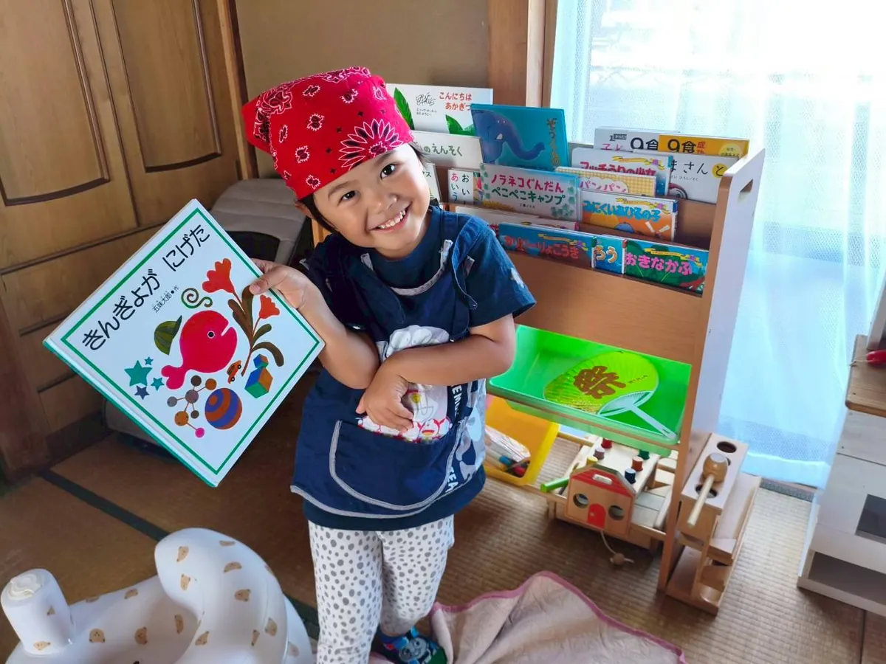

年齢や目的に合わせて、気になるところから選んでください。親子・小学生レッスンは、毎月共通のテーマ（だし・切る・煮る など）で開催しています。

「できた！」を隣で見守れる、親子の料理時間。家ではなかなかできない「子どもが主役の時間」をここでつくります。

料理を通して、自分で考えて動く力を育てる放課後の習い事。家では任せきれないことも、教室で経験に変えていきます。

講師自慢の研究レシピで、手作りおやつ・デコレーション・ラッピングまで楽しむ特別レッスン。親子の思い出にも、パティシエに憧れる子の挑戦にも。

スマッシュケーキ・ジェンダーリビールなど、作る時間からプレゼントになる完全予約制のプラン。1〜2組限定で、詳細はLINE相談。

迷ったら、まずは体験レッスンで雰囲気から。参加したいレッスンが決まっている方は、各レッスンページからそのまま予約できます。
「どのレッスンが合うかな？」の相談だけでも大丈夫です。